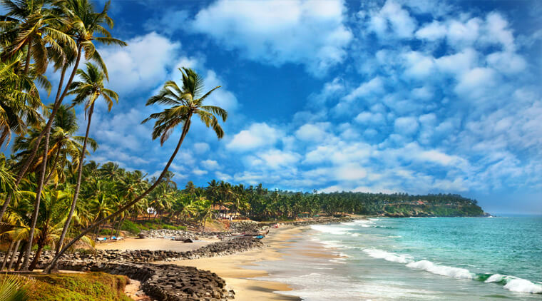
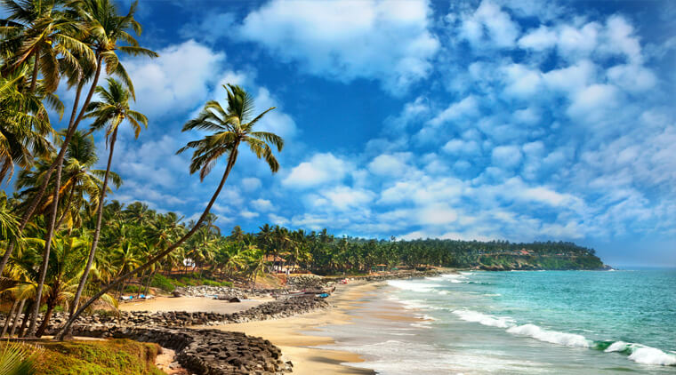

Kovalam - The Beach Paradise of Kerala
 

Kovalam is a beauty and one offering cherished experiences. The place offers a
lot to tourists. In addition, the pleasant weather, soothing breeze, golden soft
sand, and tall coconut trees add more charm to this little piece of paradise. Also,
go swimming or bask in the warm sunshine. Get to enjoy lip-smacking seafood.
Soothing Ayurvedic massages are also on offer. Relax sunbathing in the warmth or
try out water sports like parasailing, snorkeling, etc. Kovalam is famous for its
beaches, among the most pristine in India. Kovalam is extremely popular among
westerners due to shallow waters and low tidal waves. It is also one of the oldest
tourist enclave in India, which known among tourist circuit right in 1930s.
WAY TO KOVALAM:-
<--BACK
HOME